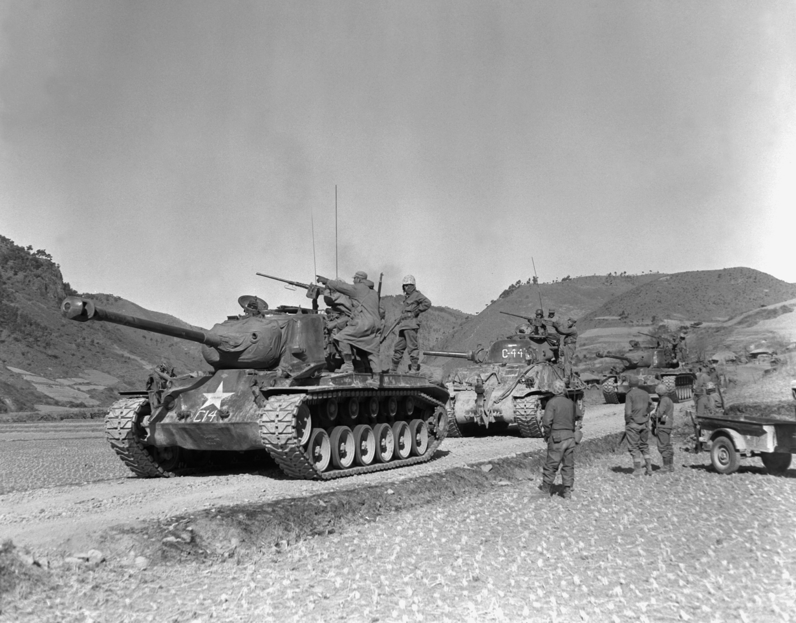
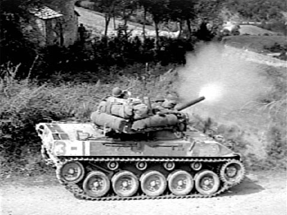
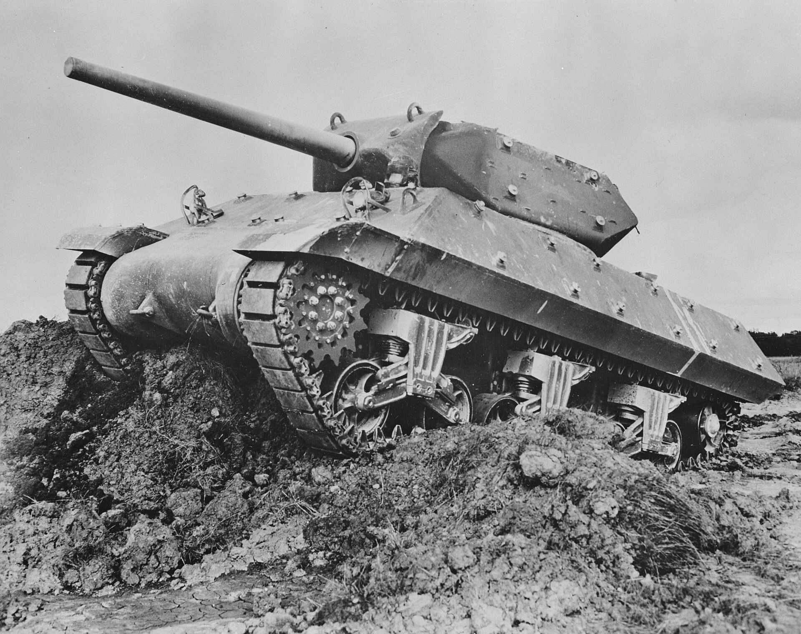

Der Standardpanzer der Alliierten. Extrem zuverlässig und in massiven Stückzahlen produziert.
Der schwere Panzer der USA, spät im Krieg eingeführt.
Der schnellste Ketten-Panzer des Zweiten Weltkriegs.
Der am meisten eingesetzte US-Jagdpanzer.